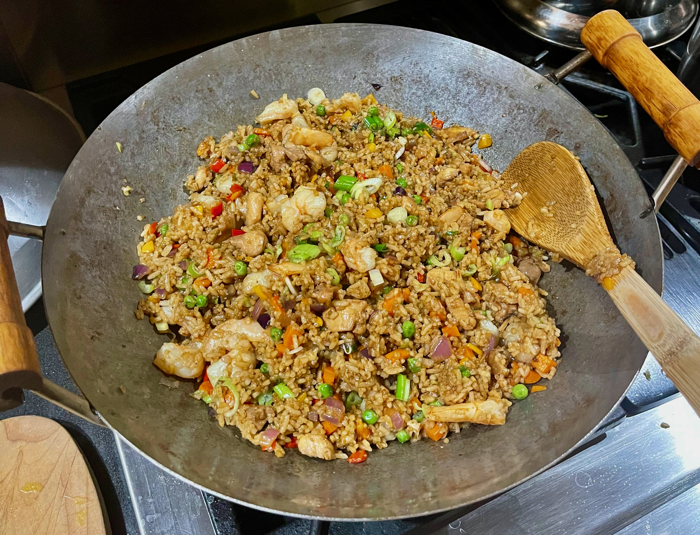

Fried Rice

Description
Fried rice is one of my all time favorite dishes to cook when I want to make something deliciously satisfying in a pinch. This recipe super simple, super tasty,
and extremely wallet friendly, so why not give it a try!
Ingredients
- 4 Tbsp vegetable oil
- 6 cloves garilc, rough mince
- 1 onion, diced
- 1 red bell pepper
- 2 carrots, diced
- 3 stalks celery, finely sliced
- 3-4 green onions, finely sliced
- 2-3 cups cooked rice
- 3 Tbsp all purpose soy sauce
- 1 tsp dark soy sauce
- 1 tsp MSG
- 1 tsp white pepper, fresh cracked
- 225 grams protein of choice
- Lime wedges and cucumber slices for serving
Steps
- In a carbon steel skillet or wok heat 2 Tbsp of oil over high heat. Once hot and slightly smoking add your protein and flash fry for 2-3 minutes just to get a bit of color, our goal is not to fully cook the protein yet. Cut the heat and place the protein in a bowl to add later.
- Turn the heat back to high and bring the rest of the oil to a bare smoke. Add the vegetables and fry until they're lightly charred.
- Add the rice, protein, and the soy sauces now, then toss/mix everything to combine. Keep tossing over high heat until the rice grains are well toasted.
- Plate with green onions to garnish with a lime wedge and cucumber slices on the side. Enjoy!